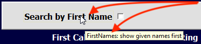
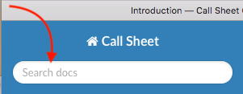

Introduction¶
Welcome to Call Sheet¶
This Excel-based utility is designed to manage creating a Call Sheet for printing, to submit to the After-Hours Coordinator. It replaces a manually copy-and-paste approach to filling out this document. Call Sheet extends Excel through forms and code written in Visual-Basic for Applications, which is part of the Microsoft Excel product.
This Help file pertains to version 0.3 (v3).
Staff Names and Phone Numbers are alphabetically saved in the NamesPhones sheet (which is hidden), along with their roles in the Operating Theatre and Post-Op Recovery. These names and phone numbers and roles are used by the software to generate a call sheet: this is accomplished using the On-Call form, which is launched with a button on the first worksheet.
How to Best Use Help¶
While Call Sheet’s use seems pretty straight-forward to the developer, he realises that his approach to running software could differ wildly to other inhabitants of the solar system run software: hence, this Help file.
Why this approach to a Help file? See the footnote [1].
If the user “runs into a snag”, as in: doesn’t know how to proceed further, she can click on the Help button: there is one on each form and on the main worksheet. Clicking the Help button will bring up this Help document. If the user is on a form, this document will display Help for that form.
It is suggested to make use of the Quick Search feature if a brief perusal of the menu doesn’t reveal what the user needs help with.
For example, let’s say help is needed on the purpose of the “Search by First Name” toggle (tick box) on the On-Call form:
Moving the mouse cursor over the control will display a brief description of that control in a yellow box called a “tool-tip”. Most controls will display a tool-tip: keep in mind that sometimes the tool-tip text will appear beneath the control instead of next to the cursor.
The tool-tip displays the name of the control first, then a colon, then the description. Make a note of the text in the tool-tip box, click on the Help button, and then, in the Quick “Search docs” field in Help (this document):
…type the name of the button or control and press <Enter>.
If “Search docs” does not produce any results, please notify the developer.
Conventions used in this Document¶
This Help file uses certain conventions:
Stuff you type on
<Enter> - the ‘<’ and ‘>’ represent a physical key on a keyboard
Things to click on
[ Close ] - represents a clickable button
(_o_) - represents a selected radio button
(___) - represents a deselected radio button
[_X_] - represents a selected tick box
[___] - represents a deselected tick box
Notes
[1] As Microsoft in their wisdom didn’t see fit to include a means to provide a very flexible custom help documentation system without installing questionable add-ons - something most security-conscious IT departments of organisations such as Queensland Health would definitely never permit - a method of sharing help information had to be come up with that would provide that information quickly, consistently and accurately. Therefore, I have chosen HTML (think: Web) pages for documenting Help. The degree of success in finding help in these pages depends on how the user generally searches for help on a computer, but I would suggest this approach.